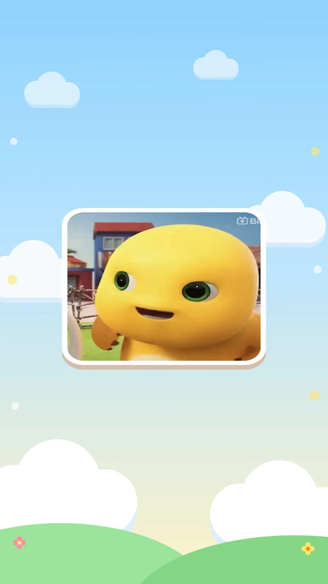

¡Hola! Soy Nailong 🦖✨
Vengo del Planeta Dragón, tengo 3 añitos, huelo a leche calentita y miTengo 3 añitos y mi barriguita redonda rebota haciendo ¡DUANG~ DUANG! ¡Haz clic en mi pancita para hacerme cosquillas!

💡 Tip: ¡Haz clic varias veces seguidas en su pancita para ver cómo rebota!
✨ Cambia mi estado de ánimo:
¿Quién es Nailong?
Conoce al personaje de animación 3D creado por Seventh Impression que arrasa en China y el mundo entero con sus memes, cortos y travesuras.

El Dragón de Leche
Su nombre Nailong significa "Dragón de Leche" por su color amarillo cremoso y su piel suave. Cayó de su nave espacial a la Tierra, es súper glotón y su tripita es de goma elástica.

Xiao Qi
Un niño genio e inventor de gran corazón. Adoptó a Nailong tras su llegada a la Tierra, inventa máquinas para sus aventuras y siempre tiene que tirar de su colita cuando Nailong se pone perezoso.

Bombloong
El dragón morado gruñón que siempre intenta ganarle a Nailong y crear travesuras. ¡Pero la pancita rebotona y la buena suerte de Nailong siempre hacen que los planes de Bombloong fracasen con risas!

¡Poderes y Escamitas!
Tiene tres características placas verdes en su espalda, puede cambiar de tamaño a voluntad, lanza llamitas de fuego mágico y su comida preferida en todo el universo son los muslitos de pollo crujientes.
¡Achúchame en 3D!
Gíralo, acércate y hazle cosquillas: su pancita rebota, su cabeza pide mimos y su colita se mueve. ¡Cada zona tiene su reacción!
Nailong 3D duerme en su huevo
Solo se carga si lo despiertas: así la web va ligera y no gasta batería.
👆 Gira · 🤏 Acerca · 💛 Tócale la pancita 👆 Arrastra para girar · 🤏 Pellizca o usa la rueda para acercarte · 💛 Toca su pancita
🎬 ¡Haz que Nailong…!
😊 Caritas de la serie
🎨 Estilo y descargas
¿Qué es el modelo .glb?
El modelo incluye esqueleto y animaciones horneadas (reposo, acciones y caritas de la serie). Ábrelo en Blender, Unity, Godot o cualquier visor glTF.
Stickers de Nailong
Llévate los 126 stickers a tu WhatsApp con la app, juega con las animaciones en el Visor Mágico y explora el álbum completo. ¡O añade tus propias fotos!
Stickers Nailong Oficial para WhatsApp
Los 126 stickers en 5 packs, con 1 toque.
¡Instala los 126 stickers oficiales directamente en tu WhatsApp con 1 toque! Incluye los 5 packs completos (97 animados + 29 estáticos) y la carpeta «Mi Selección» para crear tus propios packs.
🎁 Novedades
Escanea con tu móvil para bajar el APK al instante

🎬 Tráiler oficial
¡El Mundo Mágico de Nailong en Movimiento!
Disfruta del tráiler animado oficial creado con HyperFrames: físicas elásticas Duang, los 126 stickers de WhatsApp, minijuego arcade y música saltarina original.
Visor Mágico
Toca una escena para cambiar su velocidad o estamparle stickers 👉
Toca cualquiera de los 126 cromos auténticos para abrir el menú mágico: pulsa «Copiar Sticker» y pégalo en tu chat de WhatsApp (iPhone / Android), o descárgalo directo en tu móvil ⭐
📸 Gran Álbum de Cromos
¡La Botonera Musical de Nailong!
Haz clic en cada carita de Nailong para escuchar sus divertidos sonidos y expresiones de la serie.
¡Prueba los Súper Poderes de Nailong!
Cambia su tamaño de chiquitito a gigante, transfórmalo en un dragón camaleón de colores y lanza llamitas mágicas desde su boca.
🍗 ¡La Gran Comilona de Nailong!
Mueve el ratón, las teclas ← / → o desliza tu dedo para que Nailong atrape muslitos de pollo 🍗, pasteles 🍰 y biberones 🍼. ¡Esquiva las bombas de Bombloong 💣!

¡Nailong tiene mucha hambre!
Tienes 30 segundos para atrapar toda la comida que cae del cielo. ¡Cada bocado le hace rebotar de felicidad!
¡Aquí tenemos al creador de la página con Nailong! 🦖💛
¡Mirad qué amigables son juntos! El creador de este rincón mágico conoció en persona al dragón de leche más famoso del universo. Nailong estaba tan contento con la visita que no paraba de sonreír, dar saltitos y pedir un poquito de pollo frito crujiente. ¡Una amistad mágica para siempre!
 🌟 Creador & Nailong
🌟 Creador & Nailong
¡Nailong & Creador! 🦖💛
"¡Mirad qué amigables son juntos!"